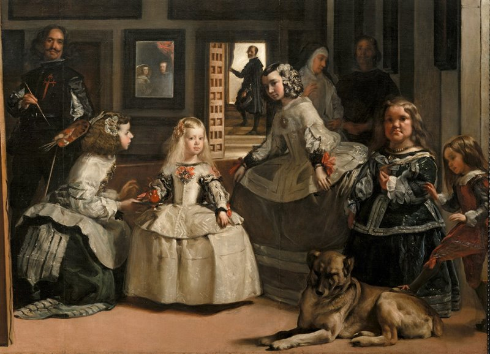
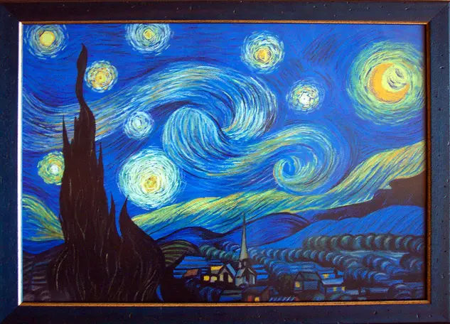
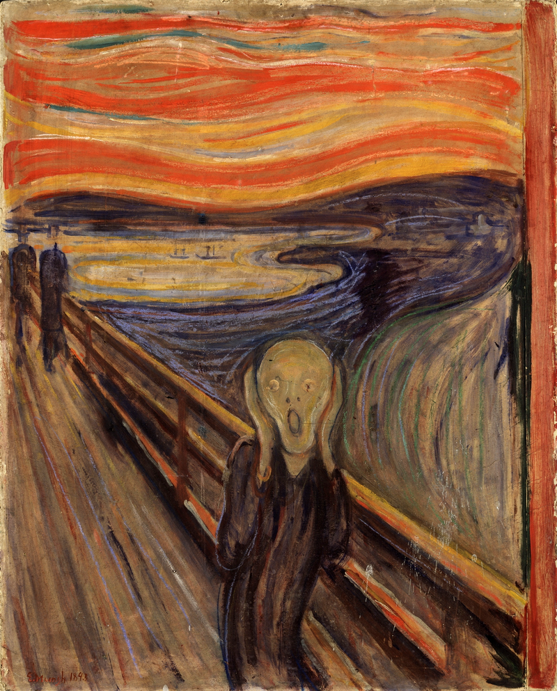
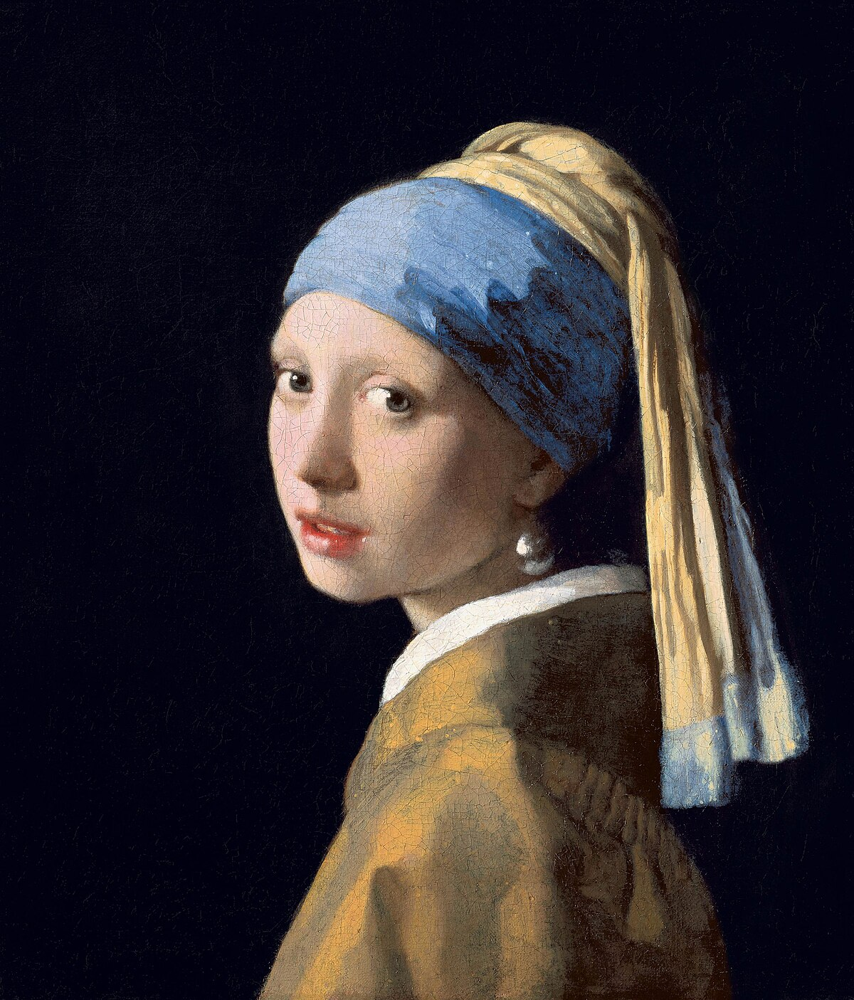

Las Meninas es una de las obras más emblemáticas. La pintura muestra a la infanta Margarita Teresa rodeada de sus damas de honor, un perro y el propio Velázquez, quien se retrata a sí mismo trabajando en el lienzo.
La obra es famosa por su complejidad compositiva y su innovador uso de la perspectiva.

La noche estrellada es una de las obras más reconocidas. Con su vibrante uso del color y pinceladas dinámicas, la obra captura la emoción y la belleza del cielo estrellado.

El grito es una de las obras más icónicas. "El grito" ha sido interpretado como una representación del sufrimiento humano y la ansiedad existencial.

La joven de la perla es una obra maestra. La obra es famosa por su uso magistral de la luz y el color, así como por la enigmática belleza de la joven.